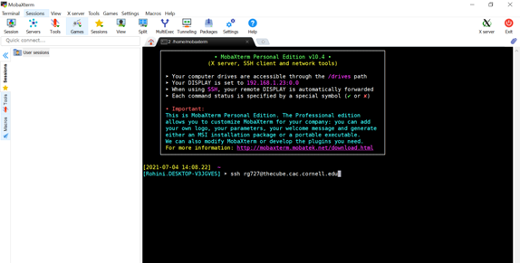

Cluster Basics#
Contains brief introductions to using HPC clusters, applicable to both The Cube and Hopper.
Contributions to this demo are welcome, preferably by extending the code while maintaining generalizability.
Resources#
Reed group clusters#
The Cube#
The Cube is the personal cluster associated with the Reed Research Group. Any student in Reed Group will be provided access to the Cube and collaborators can request a guest access. In order to get access, email Pat and provide your name, email, address, and phone number so that he can register you as a user. You will get an email with your login information and a notice to set a password.
Specs on the Cube: HERE
Hopper#
Hopper is a newer cluster that is headed by the Srikrishnan Group in BEE and is shared across four groups: Srikrishnan, Steinschneider, Reed, and Anderson. Any student in Reed Group will also be allowed access to Hopper.
Before getting started, you need to request access to Hopper by filling out the form here. You may want to email Vivek Srikrishnan as well to let him know you are requesting access.
Once submitted, Vivek Srikrishnan will need to approve access. After access is granted, you should receive and email from cac-help@cornell.edu with instructions on setting up your account. Be sure to remember your account password.
Specs on Hopper: HERE
Questions#
If you have questions about installing packages on the cluster or questions about jobs, feel free to email: cac-help@cornell.edu
0. Getting started with a cluster#
0.1 Accessing Secure SHell#
Secure SHell, or SSH, is an encrypted connection protocol used to connect your local machine to a remote machine.
We will use SSH to access Hopper or The Cube. You have a few different SSH options.
0.1.2 SSH using VS Code Remote Terminal#
Personally, I recommend accessing Hopper, and HPC resources generally, using the VS Code Remote Terminal tools. This allows for all the benefits of the VS code integrated development environment (e.g., extensions, nice user interface, git support, etc.).
Andrew Dirks wrote a blog post which gives some guidance on how to access the remote terminal through SSH in this blog post: Remote terminal environment using VS Code for Windows and Mac
0.1.2 SSH for Windows#
If you are are Windows user, one option for accessing Hopper via SSH is by using MobaXTerm. Many Reed Group members use this software.

MobaXterm allows you to see the file structure in the left hand side SFTP which is convenient for navigating.
0.1.3 SSH for Mac#
Mac users are able to SSH into Hopper straight from the Mac Terminal. The only downside of the Mac Terminal is that it does not provide an interactive GUI (visual folder system), and you must rely entirely on the command line.
Previous Reed group members have had luck using CyberDuck to have more control over File Transfer Protocol (FTP) and provide a visual GUI. However, I am unable to provide any help here since I am a Windows user.
0.2 SSH log-in#
However you access the SSH terminal, you should enter the following command to initialize the SSH:
ssh <your_username>@<cluster>.cac.cornell.edu
You will then be prompted to enter your password.
For example, to log-in to Hopper is ssh <netID>@hopper.cac.cornell.edu
Once done with your work you can end the SSH connection by entering exit in the command line.
0.3 Setting up python & a virtual environment#
Note that Hopper has Python version 3.11.5 installed, however it may try to use Python version 3.6.6 by default! Similar considerations should be made for The Cube.
Be sure to load the modern version (see code below) and check your version if unsure.
# load python
module load python/3.11.5
# Make a new environment
python3 -m venv venv
# activate the environment and upgrade pip
source venv/bin/activate
pip install --upgrade pip
2. Running jobs#
2.1 Bash scripting#
Using bash straight from the command line is a necessary but not sufficient skill for good HPC usage. To do it right, you should use bash scripting, which consists of writing a series of bash commands within a bash script and running the script as a whole
For example, you might write a bash script to:
Load required software modules needed to run your code on the HPC
Execute a program or script, such as a parallel code written in Python, Julia or other programming language, using MPI or other parallel computing libraries
Process the output of your code, such as sorting and filtering results
Repeat the above steps multiple times, each time with different input parameters
Here is a generic bash script template:
#!/bin/bash
# Load the required software module for the specific language
module load <language>
# Set the input variable
input="<input>"
# Execute the code with the specified input, and redirect both output and errors to text files
<language> <code_file> $input > <output_file>.txt 2> <error_file>.txt
# Check if the code execution was successful, and if not, print an error message
if [ $? -ne 0 ]; then
echo "Error: code execution failed"
fi
2.2 Executing bash scripts#
Enter the command:
sbatch <bash_file_name>.sh
2.2.1 Executing julia#
Here is an example bash script that can be used to execute Julia code:
#!/bin/bash
# Load the Julia module
module load julia
# Run the Julia code (not parallel)
julia code.jl $1 $2
In this script, the first line specifies that it is a bash script. The second line loads the Julia module, which is necessary to run Julia code on the HPC. The third line runs the Julia code using the julia command, with two arguments passed to the code.
To run the script, open a terminal, navigate to the directory where the script and the Julia code are located, and type:
sbatch script.sh arg1 arg2
Where arg1 and arg2 are the arguments passed to the Julia code.
Gaining access to Hopper and the Cube#
The Cube#
The Cube is the personal cluster associated with the Reed Research Group. Any student in Reed Group will be provided access to the Cube and collaborators can request a guest access. In order to get access, email Pat and provide your name, email, address, and phone number so that he can register you as a user. You will get an email with your login information and a notice to set a password.
Specs on the Cube: https://www.cac.cornell.edu/wiki/index.php?title=THECUBE_Cluster
Hopper#
Hopper is a newer cluster that is headed by the Srikrishnan Group in BEE and is shared across four groups: Srikrishnan, Steinschneider, Reed, and Anderson. Any student in Reed Group will also be allowed access to Hopper. In order to get access, email Vivek Srikrishnan and provide your name, email, address, and phone number so that he can register you as a user. You will get an email with your login information and a notice to set a password.
Specs on Hopper: https://www.cac.cornell.edu/wiki/index.php?title=Hopper_Cluster
Accessing the Cluster#
In order to access the cluster, which is housed and maintained by Cornell University Center for Advanced Computing (CAC), you will have to connect remotely using SSH.
Windows#
The easiest way to remote into the above clusters if you are a Windows user is to download MobaXterm here: https://mobaxterm.mobatek.net/. Start the local terminal and then ssh into the terminal as in the following image, but using you own username.
MobaXterm allows you to see the file structure in the left hand side SFTP which is convenient for navigating.
Mac#
If you use a Mac, you can immediately ssh into the clusters without having to download MobaXterm since Macs have Terminal. However, you may find that it’s harder to navigate just using the command line. Students who use Macs in our group have had success pairing their terminal use with Cyberduck (https://cyberduck.io/) which can serve as the SFTP.
Questions#
If you have questions about installing packages on the cluster or questions about jobs, feel free to email: cac-help@cornell.edu